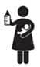

Google: süt yapan şeyler, süt kesen şeyler, daha iyi emzirmek, bebeğim emmiyor, anne sütü saklama, sütüm kesildi
 Neler Bekliyor?
Neler Bekliyor?
Çek elini klavyeden, Google’a ihtiyacın yok. Etrafındaki bütün kadınlar zaten susmadan konuşacak. Hamile olduğunu öğrenir öğrenmez bütün bir dünya elinde pankartlar, “Emzirmelisin” sloganları ile üzerine yürüyecek ve sen elin göğüslerinde bir köşeye sinmiş bulacaksın muhtemelen kendini. Hastane duvarlarındaki afişler, eczanedeki broşürler, medet umduğun dergiler, doktorlar, hemşireler, ebeler, anneler, komşu teyzeler herkes seni emzirmeye teşvik edecek. Konu açılır açılmaz hepsi ben oğlumu şu kadar emzirdim, ben kızımı bu kadar emzirdim diye kendi askerlik maceralarını anlatacaklar.
İlk gün sen emzirmeyi beceremeyeceksin, bebek de emmeyi beceremeyecek. Sakın ağlama, sütün kesilir diyecekler. Bebek her ağladığında birileri bebeğin kafasını senin memelerine yapıştıracak. Ve sen fark edeceksin ki, ömrün boyunca kendi memelerine hiç bu kadar bakmamışsın.
 Ben ne yaptım?
Ben ne yaptım?
İkizlerime hamileyken emzirmeyi çok istemiş, hep ikisini aynı anda emzireceğimin hayalini kurmuş, sırf bunun için paket paket göğüs pedleri, kalkanları, kremleri, süt torbaları almıştım. Lakin, Mete küvözde iki hafta geçirince ve ben bütün günümü ağlayıp dua ederek harcayınca işler pek de istediğim gibi gitmedi. Evet dedikleri doğru, süt bebek emdikçe gelir. Fakat doktorlar anne sütünü Mete’ye biriktirmemi, Tuna’ya mama vermemi söylediler. Dediklerini yapınca da zaten az olan sütüm giderek azaldı. Sakladığım sütleri de yanlış bir yöntemle sakladığım için o sütler Mete’ye de yaramadı. Sonuç itibariyle tek bir çare kalmıştı; mama vermek. O ana kadar karşılaştığım herkes mamayı hiç önermemiş, herkes anne sütü diye tutturmuştu. Emzirmek istediğin halde, sütün gelmiyor ve elinden bir şey gelmiyorsa, gerçekten çok üzülüyorsun. Bir gün tesadüfen karşılaştığımız ve ikizleri olan bir kadın doktor, halimi anladı. “Hiç üzülme, sütün yetmezse yetmesin; mamalar ne güne duruyor, ver gitsin hiçbir şey olmaz” dedi. Evet, gerçekten de hiçbir şey olmadı. (Alışveriş faturalarının kabarması dışında). Neticede Mete ve Tuna mama ile büyüdüler.
Tam şu sütüm yetmedi, olmadı, gelmedi psikolojisinden çıkmıştım ki, hooop Name geldi. Neyse ki, Name’de işler biraz yolunda gitti. Kızımı her fırsatta kucağıma alıp emzirmeyi denedim. İlk zamanlar biraz zorlandı ama sonrasında işi kaptı. Süt artırmak için içtiğim onca meyve suyu, su, şerbet, ayran, yediğim tahin helvası ve dereotu vs. gerçekten işe yaradı mı, yoksa sütümün zaten geleceği mi vardı bilmiyorum. (Sütüm geldi dediysem, Name’ye yetecek kadar değil, gelmedi demeyecek kadar geldi. Name de nezaketen emdi.) Bu sebeple, sadece anne sütü vermeyi değil, birkaç öğünde bir mama vermeyi tercih ettim. Anne sütünün hazmı kolay olduğundan çok çabuk acıkıyordu ve benim de dinlenmeye ihtiyacım vardı. Bu yüzden özellikle gece yatmadan önceki ilk beslenmemizde mama verdim. Birkaç saat deliksiz uyumak her yeni annenin hakkı değil mi?
Yine de çocuklarımın üçü de öyle başkalarında gördüğüm gibi ve bir Anadolu tabiriyle “cok cok” emmedi. Kendimi ilk başlarda kötü hissettim mi, evet. Aradan zaman geçti, emzirmediğim için ne hissediyorum diye soruyorum kendime. Cevap: Hiçbir şey.
Ama yalan değil, şöyle de bir şey oldu. İkizler 2,5 yaşındaydılar, bir arkadaşlarının doğum gününe davetliydik. Oraya gelen annelerden biri, küçük bebeğini emziriyordu. Önce bebeğin süt içme sesini duydum. Beynim ilk önce, biberonun deliği büyük herhalde diye düşündü. Sonra kafamı çevirdim, hayır biberon yok, bebek annesini emiyor! Artık o meme nasıl meme, akan süt nasıl sütse bebek içerken tıkanıp öksürüyor. Hislerimi gizleyemeyeceğim, imrendim, kıskandım, hasetlendim, yuh dedim, böyle de meme mi olur dedim, Allah’ım verince veriyorsun bana niye vermedin dedim, sonra da amaaan ne yapalım dedim.
Birkaç hafta sonra o gün orada bulunan başka bir arkadaşımla şöyle bir konuşma geçti aramızda. Bir başka konuda ben ona, maşallah de, nazarın değecek dedim. O da bana, “Benim nazarım değse Ayşe’nin memelerine değerdi” dedi. Artık Ayşe’de ne meme varsa, demek ki hepimizin gözü kalmış.
Bir gün ikizleri hastaneye götürmüştüm. Orada bir anne, emiyorlar mı diye sordu, hayır dedim. Kadının da ikizleri varmış, iki yaşındalarmış, hâlâ emiyorlarmış, kadın çalışıyormuş da, iş yerinde sağıyormuş, eve gelince çocuklar kapıda anne süt getirmedin mi diye ağlıyorlarmış, hemen çıkartıp biberona koyup veriyormuş çocuklarına… Anlattı böyle gururla. Çocukları eve bıraktım, anneme dedim ver şu süt sağma makinesini. Napıcan kızım sütün yok dedi, ver sen dedim, karışma. Aldım, işe gittim. Gider gitmez odamın kapısını kilitledim. Perdeleri indirdim, makinayı çıkarttım, başladım sağmaya. Hırslandım. Sağdım, sağdım, sağdım, göğüslerim acıyana kadar, hem ağladım hem sağdım. Çıka çıka 10 cc süt çıktı. İkizler kişi başı 170 cc içiyorlar. Omuzlarım düştü, gözümde yaş, elimde 10 cc süt kalakaldım. Kalk kızım dedim kendi kendime, ne yapalım yok işte… Kalktım ama sütü ne yapacağım? Lavaboya döksem günah olur mu ki? Bahçeye döksem, olmaz, neticede kutsal bir şey yani. Köpeğimiz Cingıl’ın mama kabı duruyor kapının arkasında, döküvereyim şuraya dedim ama hiç yoktan bir köpeğe sütannelik etmiş olacağım, o da olmaz. Amaaan dedim, geri dönüşüm en iyisi, bir kerede geri içtim. Hayalimde daha müthiş bir lezzet vardı. Faydaları malum ama tadında bir numara yokmuş. Gayet yavan bir sıvı, dene bak…
Şaka bir yana, anne sütünün yararlarını, ne kadar emzirmek gerektiğini artık hamile kalan her kadın biliyor. Ve aklı başında olan her anne, bebeğini emzirmek ister. Göğsünde sağlıklı sütü, kucağında yavrusu olup da emzirmeyecek bir anne düşünebiliyor musun? Ama olmayınca olmuyor güzel kardeşim. Süt gelmeyince gelmiyor. Bu yeni anneler için çok büyük bir hayal kırıklığı zaten. Bir de başkalarının yorumları, “Aaa nasıl sütün olmaz, ben iki sene emzirdim” demeleri yok mu, insanı çileden çıkartıyor. Kendini yetersiz hissediyorsun, acaba iyi anne değil miyim, olamayacak mıyım psikolojisine kadar gidiyor iş. Ben üzüldüm, sen üzülme. Ne yapalım canım, sütümüz geldi de vermedik mi, kendimiz mi içtik! (İçtim tamam ama, 10cc içtim.)
Püf Noktaları
Pek çok kadın emzirirken göğsünün yara olduğundan şikayet eder. Hatta bir arkadaşım bebek emdiği müddetçe kendisinin acıdan ağladığını söylemişti. Evet, bunun için göğüs kalkanları vs. var. Ama önemli olan, yaralar oluşmadan önce önlemini almak. Doğum yapmana birkaç hafta varken göğüs ucu nemlendirici kremlerinden kullanmanı tavsiye ederim. Göğüs uçların yumuşadığı için o kadar zorlanmıyorsun. Emzirirken de her emzirmeden sonra bir miktar sürmekte fayda var. Merak etme, bebeğin ağzıyla temas ettiğinde ona bir zararı dokunmuyormuş. Ben yine de ıslak bezle silmeyi tercih ettim. Bu arada kremi sürdükten sonra mutlaka göğüs pedi kullan, çünkü kıyafetlerde iz bırakabiliyor. (Hangi akla hizmet ettim ve çok sevdiğim mor bluzumu giyip o kremden sürdüm bilmiyorum. Üç yıl geçti, o bluzu hâlâ çok özlüyorum.)
Süt sağma makinelerini sevdim. Ciddi zaman kazandırıyor. Daha önemlisi, ilk zamanlarda ne kadar süt geldiğini bilmediğin için, bebeğin doyup doymadığını da kestiremiyorsun. Ama süt sağma makinesi ile ne kadar süt ürettiğini görebiliyorsun. (Ya da üretmediğini. Ben üretemediğimi gördüm.)
Göğüslerini boşalt. Vücut her 2-3 saatte bir yeniden süt üretimi yaparmış. Hepimizin düştüğü hatalardan, “5-6 saat sağmazsam daha çok sütüm olabilir” cin fikri gerçekten hataymış. Eğer süt göğüslerinde 3 saatten fazla beklerse kendini halsiz, kırgın ve hasta hissediyorsun. O yüzden özellikle çalışmaya başladığında süt sağma makinesini çantanda taşımayı unutma. Bu arada sağma işlemini elle de yapabiliyorsun. Biraz akıyor, sağa sola bulaşıyor ama iş görüyor.
 Sıkıcı Tarafı
Sıkıcı Tarafı
Çok vakit alıyor. Bazen bebek bir saat boyunca emmek istiyor, ağzından çekmeye de kıyamıyorsun. Boynun ağrıyor. Özellikle erkeklerin olduğu mekânlarda ortamdan ayrılarak emzirmen gerekiyor. Onun dışında en sıkıcı tarafı, Neler Bekliyor? bölümünde paylaştığım başkalarının emzirme maceralarını dinlemek. (Aynen benim anlattığım gibi.)
 Eğlenceli Yanı
Eğlenceli Yanı
- Bebekle baş başa vakit geçirmek güzel tabii.
- Bebeğin o anlarda hiç sesini çıkartmadan kucağında yatacağı için kitap okuyabilir, tv izleyebilir ya da uzanarak emzirebilirsin.
- Bebeğini anne sütü ile besleyebiliyor olmanın ve etrafınızdaki herkesin dediğini yapmış olmanın vermiş olduğu haz paha biçilemez.
- Oturduğun yerde buram buram terleyip kalori yakmak da ayrı bir avantajmış, lakin ben de öyle bir şey olmadı, terleyenlerin yalancısıyım.
- Biri senden bir şey getirmeni, kapıyı açmanı vs. istediğinde “Bebeği emziriyoruuuum” diye bağırıp işten yırtmak en güzeli.